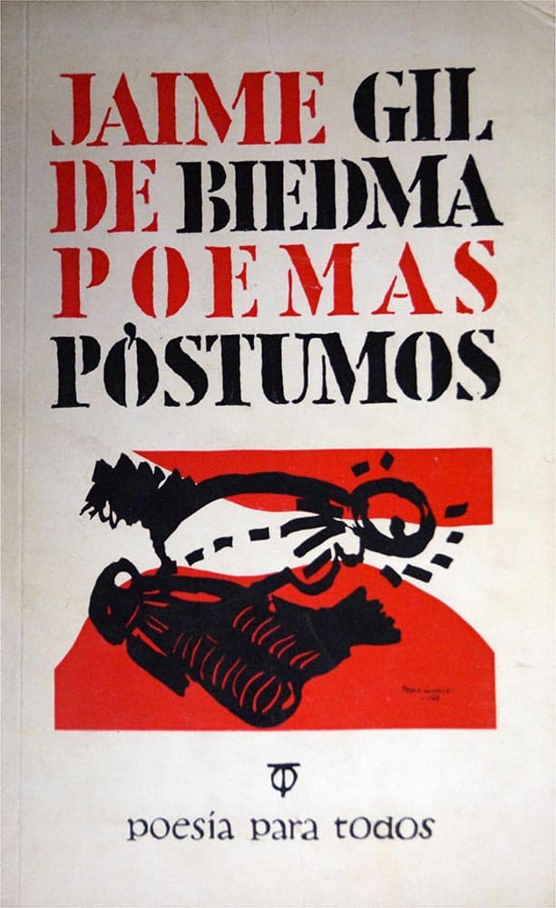

Jaime Gil de Biedma

Libros:
Poemas Póstumos

Poemas:
Contra Jaime Gil de Biedma
Poema recitado:
Voz de Jaime Gil de Biedma
Voz de Jaime Gil de Biedma
Cantautor/a:
Joaquín Sabina
Joaquín Sabina
Infancia y confesion
No volveré a ser joven
Poema recitado:
Voz de Jaime Gil de Biedma
Voz de Jaime Gil de Biedma
Cantautor/a:
Joan Manuel Serrat
Joan Manuel Serrat